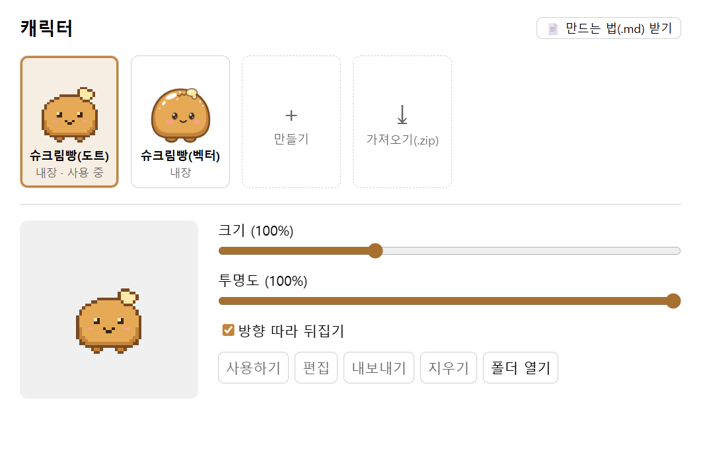
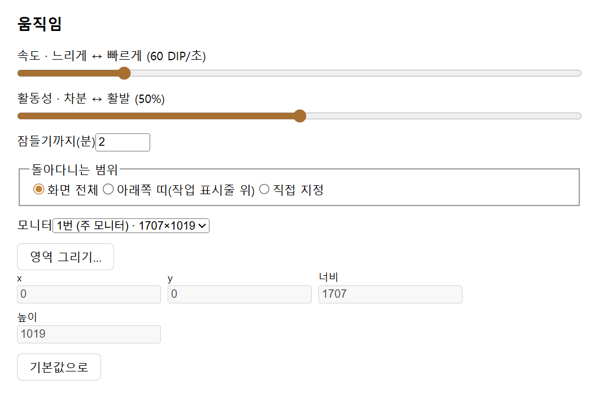
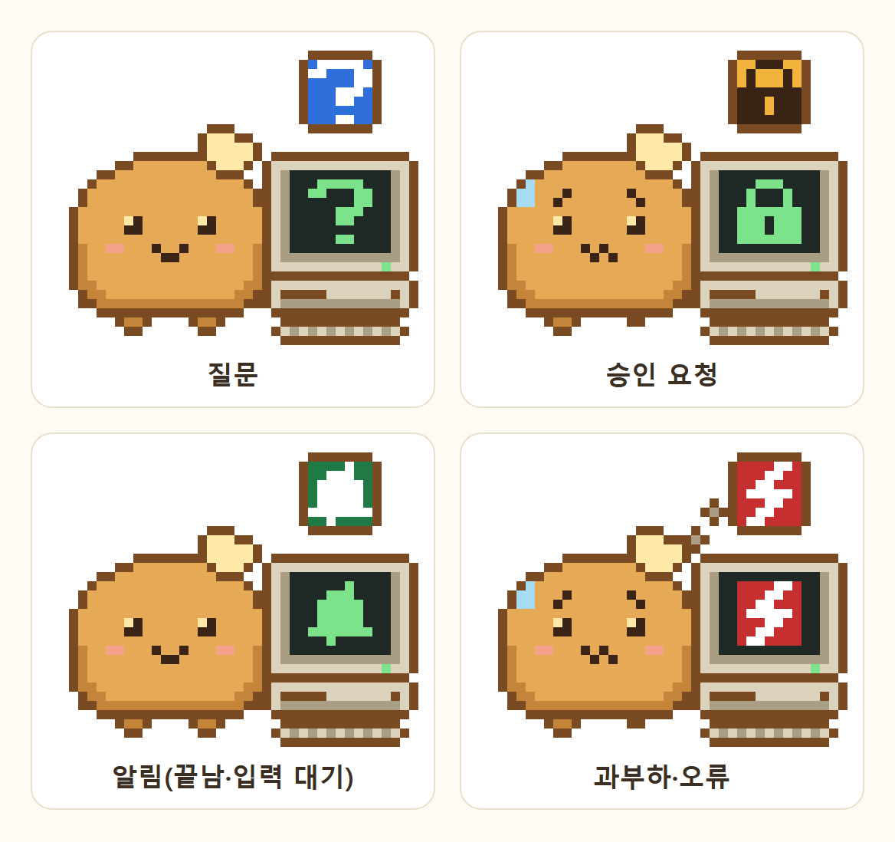

정한 범위 안을 걷고 쉬고 앉고 오래 쉬면 잠들어요. 쉬는 중에 나오게 더한 동작(춤추기·점프 같은)도 정한 빈도로 섞여요.
펫을 클릭하면
사용량 창이 열려요. 펫은 클릭 반응을 보인 뒤 말하기 동작으로 넘어가요.
Ctrl+Alt+K
질문 말풍선이 열려요. 로그인된 Claude Code(구독)가 답하고 답은 스트리밍되며 쓴 토큰이 아래에 붙어요. Esc로 취소해요. 원하면 API 키나 Ollama·LM Studio 같은 로컬 AI(OpenAI 호환 서버)로 답하게 바꿀 수 있어요.
펫을 끌면
원하는 자리로 옮겨요.
우클릭하면
질문하기, 사용량, 일시정지, 캐릭터 바꾸기, 설정…, 종료 메뉴가 떠요.
트레이 아이콘
작업 표시줄 알림 영역의 도트 슈크림빵 아이콘을 우클릭하면 펫 보이기, 일시정지, 사용량 소스, 말풍선 자동 닫힘, 질문 방식, 질문 모델, API 키 설정…, Windows 시작 시 실행, 설정…, 종료 메뉴가 떠요. 새 판이 있으면 새 판 받기도 보여요.
설정 › 캐릭터
캐릭터를 고르고 크기(50~200%)·투명도·방향 따라 뒤집기를 정해요. 기본 캐릭터는 이 앱만의 도트 슈크림빵이고 벡터로 그린 슈크림빵 같은 내장 캐릭터는 카드에 “내장”으로 표시돼요. 캐릭터를 직접 만들고 고치거나 zip으로 가져오고 내보내요. 새 동작은 플러그인이 보내는 신호에 맞춰 나오게도 할 수 있어요.
0.4.3부터 질문에 답하는 곳을 Claude Code·Anthropic API 키·OpenAI 호환 서버(Ollama·LM Studio 같은 로컬 AI) 가운데서 골라요. 서버 주소가 이 PC 밖이면 질문 내용이 그 서버로 간다는 줄이 늘 보여요.
설정 › 플러그인
받은 플러그인(.zip)을 가져오면 동의 창이 할 수 있는 일과 접속할 주소를 보여 줘요. 동의하면 앱을 다시 켜지 않아도 바로 돌고 켜기·끄기·설정도 바로 반영돼요. 내장 기능(사용량 4개·질문하기)도 여기서 켜고 꺼요. 자세한 내용은 플러그인에 있어요.
화면
설정 창은 왼쪽 탭(일반·캐릭터·움직임·플러그인)으로 나뉘어요. 아래는 탭 내용이에요.

설정 창 › 캐릭터. 카드에서 캐릭터를 고르고(내장 캐릭터는 “내장”으로 표시), 캐릭터마다 크기·투명도·뒤집기를 정해요.

설정 창 › 움직임. 속도·활동성·잠들기까지 시간과 펫이 다닐 범위를 정해요.
플러그인 만드는 법(.md) 받기
안녕 펫v2.0.0실행 중＋가져오기(.zip)사용량: 이 앱의 API내장실행 중사용량: Claude Code내장실행 중사용량: 구독 한도내장실행 중사용량: Console 조직내장실행 중질문하기내장실행 중
안녕 펫v2.0.0 · 만든 사람: ClaudeTool켜지면 펫이 반응하고 인사말을 말풍선으로 보여 줘요. 플러그인을 만들 때 보는 예제예요.할 수 있는 일말풍선을 띄워요펫을 움직여요(동작·전용 그림·이동)따로 뜨는 창을 열어요
켜기인사말안녕하세요! 안녕 펫설정 창 안의 플러그인 화면이에요.말풍선 보기창 열기신호 보내기폴더 열기내보내기(.zip)지우기
설정 창 › 플러그인(화면을 본떠 그린 그림). 이 프로젝트의 예제 플러그인 “안녕 펫”을 가져와 고른 모습이에요. 안녕 펫은 설치 파일에 들어 있지 않고 따로 받을 수도 없어요. 위는 카드, 아래 왼쪽은 고른 플러그인이 할 수 있는 일, 오른쪽은 켜기·설정 칸·플러그인이 그린 설정 화면이에요. 내장 기능(사용량 4개·질문하기)도 여기서 켜고 꺼요.
동작 방식
펫이 화면 위에 떠 있는 방법부터 사용량, 질문, 캐릭터, 움직임, Claude Code 알림까지 그림으로 정리했어요.
펫 오버레이
펫과 말풍선은 투명한 창 하나에 그려져요. 이 창은 이동 범위에 말풍선 자리를 더한 만큼만 덮고 늘 맨 위에 있지만 작업 표시줄은 덮지 않아요.
커서가 펫이나 말풍선 위에 있을 때만 클릭을 받고 빈 자리의 클릭은 아래 창으로 그대로 지나가요. 펫이 떠 있어도 하던 일을 계속할 수 있어요.
다른 앱 창
투명한 오버레이 창(항상 위)말풍선
펫이 받아요아래 창이 받아요
투명한 오버레이 창: 펫과 말풍선만 그려져요
아래에 있는 다른 앱 창
사용량
펫을 클릭하면 네 곳의 사용량을 한 창에서 봐요. 소스마다 트레이의 "사용량 소스"에서 켜고 꺼요.
구독 한도는 Claude Code의 statusLine과 연결해서 읽고 설치 파일에 든 Node.js를 써요. 조직 사용량은 Admin API 키가 필요하고 UTC 기준이에요.
이 앱질문에 쓴 토큰·비용(사용 원장)
Claude Code 로컬 로그이 PC의 Claude Code 기록
구독 한도5시간·7일, statusLine 연결
조직 사용량Admin API 키, UTC 기준
사용량 창
이 앱
로컬 로그
5시간
7일
조직
질문
기본은 이 PC에 로그인된 Claude Code를 헤드리스로 실행해(claude -p) 구독으로 답해요. 트레이의 "질문 방식"에서 Anthropic API 키 방식으로 바꿀 수 있어요.
질문은 내가 로그인한 Claude Code를 통해 Anthropic으로 가요(API 키 방식이면 Anthropic API로 가요). 비밀번호·키·개인정보·회사 기밀은 적지 마세요.
구독 방식은 Claude Code 네이티브 설치(claude.exe)와 로그인이 필요해요. npm으로 설치한 Claude Code(claude.cmd)는 이 앱에서 실행할 수 없어요.
Ctrl+Alt+K
질문 말풍선이 열려요.
질문을 적는 칸
질문을 적어 보내요.
Claude Code 구독Anthropic API 키
고른 방식으로 답을 받아요. 기본은 Claude Code 구독이에요.
답이 이어서 나타나요쓴 토큰 표시
답이 말풍선에 스트리밍되고 쓴 토큰이 아래에 붙어요. Esc로 취소해요.
캐릭터
캐릭터는 기본 상태 7개마다 그림을 한 장씩 넣어 만들어요. 오른쪽 재생기는 기본 캐릭터 도트 슈크림빵의 실제 프레임(32×32칸, 모두 23프레임)을 앱처럼 계단식으로 넘겨요. 상태를 누르거나 자동 재생으로 돌려 보세요.
쉬기: 숨 쉬듯 몸이 한 칸씩 줄었다 늘고 가끔 눈을 깜빡여요. 쉬기 그림만 있어도 캐릭터를 저장할 수 있어요.
걷기: 한쪽 발을 들고 기울었다가 두 발로 디디며 통 눌리기를 되풀이해요. 왼쪽으로 걸을 때는 그림이 좌우로 뒤집혀요.
앉기: 발을 양옆 앞으로 내밀고 앉아서 숨 쉬고 가끔 눈을 깜빡여요.
잠자기: 앉은 채 눈을 감고 느리게 숨 쉬며 z가 작은 것부터 하나씩 떠올라요. 잠자기는 좌우로 뒤집지 않아요.
반응: 웅크렸다가 폴짝 뛰어 크림 방울을 튀기고 내려앉아 놀란 얼굴로 서요.
말하기: 말풍선이 떠 있는 동안 입을 벌렸다 닫아요.
끌려가기: 들어 올리면 길쭉해지고 걱정스러운 얼굴에 땀방울이 맺히며 발이 대롱대롱 흔들려요.
쉬기: 숨 쉬듯 몸이 한 칸씩 줄었다 늘고 가끔 눈을 깜빡여요. 쉬기 그림만 있어도 캐릭터를 저장할 수 있어요.
움직임 설정
움직임 탭에서 속도, 활동성, 잠들기까지 시간을 정하고 펫이 다닐 범위를 골라요. 모니터가 여럿이면 어느 모니터에서 다닐지도 골라요.
화면 전체작업 표시줄을 뺀 화면 어디든
아래쪽 띠작업 표시줄 바로 위, 펫 키만 한 띠
직접 지정화면 위에서 드래그해 정해요
Claude Code 알림 0.4.1 새 기능 · 0.4.2 연결 버튼
Claude Code가 질문하거나 승인을 기다리거나 일을 끝내거나 과부하로 멈추면 펫이 몸짓과 말풍선으로 알려 줘요. 알림 목록의 버튼을 누르면 그 세션이 열려요. Claude 앱 세션은 앱의 그 화면으로, 터미널 세션은 새 창에서 claude --resume으로 이어져요.
알림 플러그인 claude-notify와 알림 캐릭터 choux-notify(고전 컴퓨터 화면을 든 슈크림빵)를 릴리스에서 받아 가져온 뒤, 설정 창의 연결 버튼을 누르면 앱이 Claude Code에 훅을 연결해요. 명령을 치거나 토큰을 복사할 일이 없어요.
다른 프로그램의 설정을 고치는 권한이라 동의 창이 “주의가 필요한 권한”으로 따로 보여 주고 연결을 눌렀을 때만 훅을 넣어요. Claude Code 설정(settings.json)은 바꾸기 전에 백업을 남겨요.
훅은 이 PC 안(127.0.0.1)으로만 소식을 보내요.
Node.js는 설치 파일에 들어 있어서 따로 깔지 않아도 돼요. 쓰는 순서는 사용 설명서에 있어요.

플러그인
새 기능
받은 플러그인(.zip)을 가져와 펫에 기능을 더해요. 가져올 때 무엇을 할 수 있는지 보여 주고 동의를 받아요. 플러그인마다 보이지 않는 격리된 창에서 따로 돌리고 앱과는 정해 둔 통로로만 이야기하게 했으며 인터넷 요청은 선언하고 동의한 주소로만 보내게 했어요. 다만 격리가 완벽하지는 않아요(알아 둘 점). 0.4.3부터는 AI에게 일을 시키고 승인 카드를 거쳐 이 PC에서 프로그램을 실행하거나 고른 폴더의 파일을 쓰는 에이전트 플러그인도 만들 수 있어요.
플러그인＋가져오기(.zip)질문하기내장
열기timer.ziphello-pet.zip열기취소
① 가져오기믿을 수 있는 사람에게 받았거나 직접 만든 플러그인 .zip을 설정 창 › 플러그인 탭의 “＋ 가져오기(.zip)”로 골라요(그림은 예제 “안녕 펫”을 묶은 zip이에요). 데이터 폴더의 plugins에 폴더째 넣어도 돼요.
✕
?
"안녕 펫" 2.0.0을 설치할까요?만든 사람(플러그인이 적은 값): ClaudeTool이 플러그인이 할 수 있는 일:· 말풍선을 띄워요· 펫을 움직여요(동작·전용 그림·이동)· 따로 뜨는 창을 열어요그 밖에 설정 값 읽기·자기 저장 공간·캐릭터 신호 내기는 늘 할 수 있어요.
설치취소
② 동의동의 창이 이 플러그인이 할 수 있는 일(권한)과 접속할 주소를 보여 줘요(이 예제는 접속할 주소가 없어요). 업데이트로 권한이나 주소가 늘면 다시 물어요.
✕파일✕다른 플러그인✕앱 화면 내용✕동의 안 한 주소로 요청보이지 않는 격리된 창안녕 펫실행 중→말풍선→펫 동작→따로 뜨는 창
10초 넘게 응답이 없으면 다시 시작하고 10분 안에 세 번 멈추면 꺼 둬요.
③ 격리된 창동의하면 앱을 다시 켜지 않아도 바로 돌아요. 플러그인마다 보이지 않는 창에서 따로 돌리고 파일·다른 플러그인·앱 화면 내용에는 닿지 못하게 만들었어요(files·run·open-app 권한을 허락한 플러그인은 앱을 거쳐 고른 폴더의 파일과 허락한 프로그램에 닿아요). 인터넷 요청도 선언하고 동의한 주소로만 보내게 했지만 DNS 이름 조회에 정보를 싣는 틈은 막지 못해요.
안녕 펫안녕하세요!화면 보기
④ 반응동의한 권한으로 펫을 움직이고 말풍선을 띄워요. 그림의 예제 “안녕 펫”은 켜지면 펫이 반응한 뒤 인사말을 말풍선으로 보여 줘요.
그림 속 “안녕 펫”은 이 프로젝트의 예제 플러그인이에요. 설치 파일에 들어 있지 않고 따로 받을 수도 없으니, 직접 해 보려면 아래 직접 만들기처럼 만드는 법 문서의 타이머 예제를 따라 만들어 가져오세요.
플러그인이 쓰는 통로
플러그인은 Node.js 프로그램이 아니라 보이지 않는 창에서 도는 브라우저용 JavaScript예요. 앱과는 아래 통로로만 이야기하고 동의 창에는 그중 플러그인이 쓰겠다고 적은 권한과 주소가 보여요.
플러그인 A보이지 않는 격리된 창
플러그인 B보이지 않는 격리된 창
관문동의한 권한인지, 한도 안인지 확인
말풍선펫 동작화면 세 곳신호앱 소식저장 공간비밀 칸설정 값
나가는 연결: 앱이 대신 보내는 요청은 선언·동의한 주소로만 가요.
들어오는 연결: 내 PC 안 127.0.0.1 전용 포트, 플러그인별 토큰.
말풍선
잠깐 떴다 사라지는 알림과 버튼이 있는 카드 말풍선
펫 동작
캐릭터의 동작·전용 그림·이동
말풍선 안 화면
말풍선 안에 플러그인이 그린 HTML 카드
설정 창 안 화면
플러그인 탭 상세 칸에 그리는 화면
따로 뜨는 창
선언한 크기의 작은 창, 3개까지
신호
플러그인이 신호를 보내면 캐릭터가 정해 둔 동작을 해요(캐릭터 편집기의 “플러그인 신호”)
나가는 연결
인터넷 연결(앱이 대신 보내는 요청과 WebSocket)은 선언하고 동의한 주소로만 가요. 모든 주소를 원하는 플러그인은 동의 창에 경고가 붙어요. 다만 DNS 이름 조회에 정보를 싣는 틈은 막지 못해요(면책조항 3.4).
들어오는 연결
이 PC의 다른 프로그램이 보내는 이벤트를 내 PC 안 127.0.0.1 전용 포트에서, 플러그인별 토큰을 든 요청만 받아요
비밀 칸
API 키·웹훅 주소 같은 값은 Windows 계정으로 암호화해 저장하고 설정 창에는 “저장됨 ●●●●”만 보여요
알림·링크·클립보드·비밀·훅
허락받으면 Windows 알림, 눌러서 여는 링크, 클립보드 쓰기, 코드가 받은 토큰의 암호화 보관, Claude Code 훅 연결(“주의” 권한)을 쓸 수 있어요
AI·실행·파일·앱 열기
허락받으면 내가 고른 AI에게 글 보내기, 허락한 프로그램 실행, 고른 폴더 안 파일 읽기·쓰기, 파일·앱 열기를 할 수 있어요(모두 “주의” 권한이고 실행·쓰기·열기는 승인 카드를 거쳐요)
격리 실행플러그인마다 보이지 않는 창에서 따로 돌리고 파일·다른 플러그인·앱 화면 내용에는 닿지 못하게 만들었어요(files·run·open-app 권한을 허락한 플러그인은 앱을 거쳐 고른 폴더의 파일과 허락한 프로그램에 닿아요). 다만 격리는 위험을 줄이는 장치일 뿐 안전을 보증하지 않아요.
동의 창가져올 때 할 수 있는 일과 접속할 주소를 보여 줘요. 다른 프로그램의 설정을 고치거나 이 PC에서 프로그램·파일을 다루거나 AI에게 글을 보내는 권한은 “주의”로 따로 묶어 보여 줘요. 업데이트로 권한·주소가 늘면 다시 물어요.
다시 켜지 않아도켜기·끄기·설정 바꾸기가 바로 반영돼요. 데이터 폴더의 plugins에 폴더를 넣거나 고쳐도 바로 다시 읽어요(처음 켤 때 동의).
멈추면 다시 시작10초 넘게 응답이 없으면 다시 시작하고 10분 안에 세 번 멈추면 꺼 둬요.
알아 둘 점격리는 완벽한 보호가 아니에요. 인터넷 권한이 없는 플러그인도 DNS 이름 조회(DNS 미리 풀기)에 짧은 정보를 실어 밖으로 보낼 수 있고 앱은 이 틈을 막지 못해요. 믿을 수 있는 플러그인만 가져오세요. 켠 플러그인마다 메모리를 약 70MB 더 써요. 자세한 한계는 면책조항의 3.4 “플러그인과 가져온 파일”에 있어요.
들어오는 연결: 빌드가 끝나면 펫이 알려요
이 PC의 다른 프로그램(빌드 스크립트·자동화 도구 등)이 플러그인에 이벤트를 보낼 수 있어요. 아래는 이 기능을 쓰는 예시 플러그인 “빌드 알림”이에요.
# 빌드가 끝나면 알리기POST 127.0.0.1 …/events{"type":"build-done"}
빌드 스크립트(토큰을 들고)
127.0.0.1✓토큰 확인내 PC 안 전용 문
빌드 알림플러그인(예시)
빌드가 끝났어요!펫이 반응하고 말풍선
다른 프로그램이 플러그인별 토큰을 들고 이벤트를 보내면, 그 플러그인이 받아 펫을 움직이고 말풍선을 띄워요. 통로는 이 권한이 있는 플러그인이 켜져 있을 때만 내 PC 안(127.0.0.1) 전용 포트에 열려 PC 밖에서는 닿지 않고 웹 페이지는 보낼 수 없어요. 토큰은 플러그인 탭에서 복사하고 재발급해요.
직접 만들기
만드는 법(.md) 받기설정 창 › 플러그인 탭 제목 줄의 버튼으로 안내 문서를 저장해요. 이 문서 하나만 AI에게 건네도 만들 수 있게 썼어요.
AI에게 건네기문서를 건네며 “이걸 보고 타이머 플러그인을 만들어 줘”처럼 원하는 기능과 끝났을 때 펫이 할 일을 말하면 돼요.
.zip으로 묶어 가져오기받은 파일을 .zip으로 묶어 가져오고 동의하면 바로 돌아요. 문서에는 처음부터 zip 배포까지 따라 하는 타이머 예제가 들어 있어요.
쓴 기술
버전은 0.4.3 기준이에요.
기술과 버전
이 프로젝트에서 맡은 일
Electron44.4.3
앱 틀: 투명한 오버레이 창, 설정 창, 트레이, 플러그인마다 보이지 않는 격리된 창
Node.js24.21.0
Electron에 든 런타임: 플러그인의 들어오는 연결(127.0.0.1)과 앱이 대신 보내는 나가는 연결
TypeScript7.0.2
모든 코드(strict 모드)
electron-vite5.0.0
메인·preload·화면 빌드
Preact10.29.8
펫·말풍선 화면과 설정 창 화면
zod4.6.5
설정·IPC·캐릭터 팩·플러그인 설명 파일(plugin.json) 검증
Vitest5.0.1
단위 시험, happy-dom으로 화면 시험
Playwright1.63.0
실제 앱을 띄우는 e2e 시험
electron-builder26.15.3
Windows 설치 프로그램(NSIS)
electron-updater6.8.10
새 판 확인과 업데이트(내려받은 설치 파일의 해시 확인)
fflate0.8.3
캐릭터·플러그인 zip 가져오기·내보내기
Anthropic SDK0.127.0
API 키 방식 질문
개발 방식
Claude Code로 만들었어요. 기능마다 설계와 계획을 먼저 문서로 쓰고 계획의 태스크마다 서브에이전트 하나가 구현하면 다른 서브에이전트가 리뷰했어요.
이 저장소의 릴리스에서만 받으세요. 같은 이름으로 다른 곳에서 받은 파일은 위조일 수 있어요. 설치 파일에는 코드 서명이 없어서 처음 실행할 때 Windows SmartScreen 경고가 뜰 수 있어요. 받은 파일의 SHA-256 값을 아래와 비교한 뒤 추가 정보 → 실행을 누르세요. 쓰는 법은 사용 설명서에 있어요.
SHA-256 SHA256-자리-0.4.3
Windows 10·11 64비트펫은 늘 다른 창 위에 떠 있고 작업 표시줄 알림 영역에 아이콘이 생겨요.
질문하기이 PC에 네이티브로 설치하고 로그인한 Claude Code(구독)로 답해요. 별도 API 키는 필요 없고 원하면 API 키 방식이나 Ollama·LM Studio 같은 로컬 AI(OpenAI 호환 서버)로 바꿀 수 있어요.
구독 한도 보기·Claude Code 알림필요한 Node.js가 설치 파일에 들어 있어서 따로 깔지 않아도 돼요.
새 판 알림0.4.2부터 앱이 새 판을 알려 줘요. 처음에는 확인하기 전에 안내하고 설정 창에서 끌 수 있어요. 내려받기와 설치는 누를 때만 해요. 0.4.1 이하는 이번 한 번만 직접 덮어 설치하세요.
시작 시 실행Windows에 로그인할 때 자동으로 켜지게 할 수 있어요. 기본은 꺼져 있어요.
데이터설정·캐릭터·플러그인 같은 데이터는 설치 폴더 옆 “설치 폴더-data”에 쌓이고 업데이트하거나 지워도 남아요.